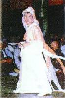

Retourner au menu principal
| Espace libre |
|
4Q30 Plus vnze fois Luna Sol ne vouldra Tous augmenté & baissez de degré : Et si bas mis que peu or on coudra, Qu'apres faim peste, découuert le secret. |
|
* L'Est (la lune) et l'Ouest (le soleil) restent hostiles… Mais après beaucoup de problèmes terrestres, le secret (la Vérité) sera révélé.
| 2Q28 Le penultiesme du surnom du Prophete, Prendra Diane pour son iour & repos : Loing vaguera par frenetique teste, Et deliurant vn grand peuple d'impos. |
|
4321
NostradAMUS
...SUMA
1234 |
*Diana = la Lune : SUMA CH tient des retraites (les jours de repos) pendant la fête de la Lune tous les ans !
*Maître a voyagé dans de nombreux pays différents pour rencontrer des dirigeants du monde et autres personnes concernées à propos des conditions de vie, du relogement, et d'autres questions urgentes touchant les réfugiés Aulaciens.
Épître à Henri II
|
EP04 iusques à ce naistra d'vn rameau de la sterille, de long temps, qui deliurera le peuple vnivers de celle servitude benigne & volontaire EP105 soy remettant à la protection de Mars, spoliant Iupiter de tous ses honneurs & dignitez, pour la cité libre, constituee & assise dans EP138 Siecle par moyen des trois vnys secretremet cerchat la mort & insidies par embusches l'vn de l'autre, & durera le renouuellement de EP139 triumuirat sept ans, que la renommee de telle secte fera son estendue par l'vniuers & sera soubstenu le sacrifice de la saincte & immaculee |
* En un temps de grande confusion religieuse, le Maître naîtra d'un «isme» qui a longtemps été sans un vrai Maître spirituellement illuminé ! (la mère de Maître n'a pas conçu pendant douze ans avant la naissance de Maître).
*Mars : feu (lumière céleste intérieure), cette flamme s'est déjà répandue dans le monde !
|
4Q31 La Lune au plain de nuict sur le haut mont, Le nouueau sophe d'vn seul cerveau la veu : Par ses disciples estre immortel semond, Yeux au mydi, en seins mains corps au feu. |
|
*Maître a été illuminée quand Elle était encore très jeune. Elle a vu la LUNE intérieure avec Son oeil spirituel. Une fois avec Maître, les résidents ont vu la lune restée au sommet d'une montagne pendant très longtemps.
*Nos pratiquants saluent toujours Maître avec le chant des «Voeux d'une vie éternelle». L'un des noms de plume de Maître est " Wu Tzu " qui signifie «ne meurt jamais».
*La dernière phrase décrit toute la position bien connue de notre pratique de méditation sur le Son et la Lumière. Et nous, ainsi que d'autres, avons vu le corps de Maître irradiant de la lumière céleste (feu).
| 1Q95 Deuant mustier trouué enfant besson, D'héroic sang de moine & vetustique : Son bruit par secte langue & puissance son , Qu'on dira fort esleué le vopisque. |
|
* Maître a participé à des cérémonies de moines, et s'est d'abord montrée dans des habits de moine bouddhiste (Jumeau : Maître a passé un certain temps dans des monastères chinois et tibétains)
*Enfant jumeau : Maître et Son «double» – Son corps de manifestation.
*Utilisant les équipements les plus modernes et de puissants systèmes de haut-parleurs, Maître délivre un discours sur le Son intérieur.
*Le jumeau né prématurément : «Maître est trop jeune pour être illuminé» est un commentaire souvent fait par les différents publics. Quand bien même, tout le monde était convaincu par le puissant discours de Maître et reconnaît le Maître Suprême (le jumeau élu).
| 10Q75 Tant attendu ne reuiendra iamais, Dedans l'Europe, en Asie apparoistra, Vn de la ligue yssu du grand Hermes, Et sur tous Roys des Orients croistra. |
|
*Le Maître ne s'est pas réincarné là où les gens L'attendaient.
*Maître est née en Au Lac (Asie) mais peut rester librement en Europe (Elle possède une nationalité européenne).
*Hermès : la doctrine de Maître est un enseignement illuminé non dualiste comme celui d'Hermès.
*Au-dessus du pouvoir terrestre, les enseignements de Maître se répandront d'abord en orient : Maître a fait des voyages et conférences à Formose, Singapour, Hong Kong, et en Indonésie, Thaïlande, Corée, Japon… (tous les pays royaux de l'orient). Son enseignement a été répandu là en premier où il a germé et poussé fortement !
| 4Q50 Libra verra regner les Hesperies, De ciel & tenir la monarchie : D'Asie forces nul ne verra peries, Que sept ne tiennent par rang la hierarchie. |
|
| 10Q74 Au reuolu du grand nombre septiesme, Apparoistra au temps jeux d'Hecatombe : Non esloigné du grand aage milliesme, Que les entrez sortiront de leur tombe. |
|
| 1Q56 Vous verrez tost & tard faire grand change, Horreurs extremes & vindications : Que si la Lune conduite par son ange, Le ciel s'approche des inclinations. |
|
*Libra : Balance : Le passage de pluton en balance, de 1972 à 1984.2
*Maître est allée en Occident en 1972. En 1983, Elle a commencé des initiations en Inde, à Formose, et en Allemagne, et en 1984 aux États-Unis, ramenant des âmes à la vie et les libérant de leurs tombes terrestres (corps).
*Le pouvoir du Maître Oriental détruira le malin et changera le cours de la période belliqueuse, annonçant un meilleur futur.
*La LUNE est encore conduit par son adorable Maître (ange) pour mieux équilibrer la Terre (rappeler le jeu de notre Maître «Chan Esh», la dame Lune ?)
|  | Maître habillée en dame de la Lune
|
| 4Q24 Ouy soubs terre saincte Dame voix fainte, Humaine flamme pour diuine voir luire : Fera les seuls de leur sang terre tainte, Et les saincts temples pour les impurs détruire. |
|
*Maître fait des discours et des retraites dans la grande grotte souterraine de Miaoli à Hsihu (Maître a aussi récité des poèmes à voix douce).
*Des torches, des lampes de poche…éclairent la route pour que Maître puisse marcher pendant les retraites souvent tenues dehors ou dans la forêt. Aussi, les lumières luisent la nuit quant Maître fait des discours ou va voir les amis pratiquants, répondant à leurs questions. La scène est illuminée au concert où Maître chanta, etc.
*La religion restreinte, stérile, son système de croyance sera détruit.
*Maître nous enseigne d'être libre et de ne pas quitter la maison ou réprimer nos émotions et sentiments pour être illuminés. Le temple réel est notre corps, l'abstinence réelle est le détachement de tout gain ou perte terrestre, tout en remplissant nos devoirs «donner et prendre», selon notre destin karmique.
| 5 Q96 Sur le milieu du grand monde la rose, Pour nouueaux faicts sang public espandu : A dire vray on aura bouche close, Lors au besoing viendra tard l'attendu |
|
*Rose : Féminine, enseignant féminin.
*La «Rose» se trouve confrontée à un monde puissant pendant qu'Elle essaie de parler pour le bien-être des réfugiés isolés (mois enfermés) dans des camps autour du monde. (Certains d'entre eux versent leur propre sang pour donner voix à leur pénible situation oppressée).
*Maître intervient au nom de Son peuple dans des camps de réfugiés après avoir appris leur chagrin !
| 8Q4 Dedans Monech le Coq sera reçu, Le Cardinal de France apparoistra Par Logation Romain sera deceu, Foiblesse à l'Aigle & force au Coq naistra. |
|
*Des milliers de gens se sont rassemblés pour prier en faveur des réfugiés. Des millions ont signé un document de soutien et l'ont renvoyé aux dignitaires du monde, mais peu ont voulu l'entendre. On a cru que cette énergie mouvante d'une masse souffrante causerait de la pagaille si Dieu ne bénissait pas de paix le monde !
| 9Q11 Le iuste mort à tort à mort l'on viendra mettre Publiquement du lieu esteint : Si grande peste en ce lieu viendra naistre, Que les iugeans fuyr seront contraints. |
|
*Les réfugiés désespérés se sont tués eux-mêmes devant tout le monde !
*Une grande peste arrivera au moment voulu.
*Donc même les juges doivent fuir l'endroit (le changement gouvernemental à Hong Kong) et les dignitaires doivent partir…
| 9Q50 Mandosus tost viendra à son haut regne, Mettant arriere vn peu les Norlaris : Le rouge blesme, le masle a l'interregne, Le ieune crainte & frayeur Barbaris. |
|
*Peu de temps après cela, de nouveaux officiels gouverneront cet endroit (Hong Kong). Les événements passés et les gens sont oubliés : l'affligé (Maître), vêtue de rouge (la robe du moine bouddhiste), le dignitaire transitoire et même l'oppressif, provoque des scènes de larmes (gens ramenés au pays qu'ils ont fuit).
| 9Q12 Le tant d'argent de Diane & Mercure, Les simulachres au lac seront trouuez : Le figurier cherchant argille neuue Lui & les siens d'or seront abbreuuez. |
|
*Pour des raisons de bienfaisance, Maître crée des bijoux avec des symboles d'illumination : lune, étoiles, soleil, lotus, enfants de Dieu, oiseaux du paradis…, en platine blanc argent,… etc. (la couleur de l'argent et du mercure)
*Le lac (le centre de) Hsihu signifie «lac ouest» reflète des milliers de visages joyeux de pratiquants Guan Yin depuis que Maître s'est déplacée là-bas.
*Les nouvelles oeuvres artistiques de Maîtres : objets modelés à l'argile comme le champignon, tortue et porcelaine peinte.
*Maître et disciples, tous couverts d'atours dorés, concevant des bijoux de Sa création.
| 9Q51 Contre les rouges sectes se banderont, Feu, eau, fer, corde pour paix se minera : Au point mourir ceux qui machineront, Fors vn que monde sur tout ruynera. |
|
*Les lignes ci-dessus correspondent à des situations que Maître et disciples ont rencontrées de divers endroits et pays. En ces temps agités notre force spirituelle s'est renforcée, prouvant que pour vivre dans ce monde on doit être au-dessus de lui. Se souvenant d'incidents passés, nous devons être heureux de découvrir notre détachement pour toute possession terrestre, horreur et diffamation !
*Feu : la destruction par le feu de notre littérature et nos biens par le passé par le malentendu religieux.
*Eau (encre) : l'écrit diffamatoire contre nos enseignements dans le passé, encore malentendus.
*Fer (grue) : la destruction de nos quartiers par les machines et grue en fer dans le passé.
(créés par Maître) | |
| 1Q96 Celuy qu'aura la charge de destruire Temples & sectes, changez par fantasie : Plus au rochers qu'aux viuants viendra nuire, Par langue ornee d'oreilles rassasie. |
|
*Comme nous l'avons appris de quelques expériences éloignées, l'ordre établi et les systèmes de croyance y voient une menace pour leur existence vide si les illuminés prêcheurs de vérité sont victorieux. Les gens ne peuvent faire autrement que de suivre leurs voies vertueuses et vraies ! Les accusations sont inévitables jusqu'à ce que tous les êtres de cette planète s'éveillent à leur grand Moi réel et voient Dieu en vivant. Nous devons nous armer de patience !
*Maître enseigne la voie de la paix : végétarisme, non-violence sous toutes ses formes, honnêteté, nobles idéaux…
*Les enseignements de Maître et le Son céleste intérieur remplissent notre coeur avec de précieuses mélodies ! Épître à Henri II
|
EP208 Bruslez, en apres l'antechrist sera le prince infernal, encores par la derniere foy trembleront tous les Royaumes de EP209 La Chrestienté & aussi des infideles, par l'espace de vingt cinq ans, & seront plus grieues guerres & batailles, & seront villes, citez, EP210 chasteaux, & tous autres edifices bruslez, desolez, destruits, auec grande effusion…. EP211 De laict contre les murs des villes allidez, & brisez, & tant de maux se commettront par le moyen de Satan prince infernal, que presque EP212 le monde vniuersel se trouvera defaict & desolé, & auant iceux aduenemens, aucuns oyseaux insolites crieront par l'air. Huy huy & |
|
*La grande souffrance des peuples dans les pays déchirés par la guerre toucha le sage compatissant. Maître est encore partie en tournée mondiale pour élever la conscience des habitants de la Terre, pour alléger les chagrins, les peurs et pour apporter paix et bonheur à tous . Les disciples sont toujours heureux et honorés de servir le monde.
*Les «oiseaux insolites» ne sont autre que nos tracts distribués, prévenant l'arrivée de Maître dans tous les coins du monde : voir Dieu en vivant (aujourd'hui). Illumination immédiate (aujourd'hui), le ciel est ici et maintenant, libération en cette vie (aujourd'hui).
*«Les oiseaux insolites» ne sont pas vraiment des oiseaux car ils «s'estompent» à la fin de la tournée.
| 2Q29 L'Oriental sortira de son siege, Passer les monts Apennons voir la Gaule : Transpercera le ciel, les eaux & neige, Et vn chacun frappera de sa gaule. |
|
*Maître et «Shih Fu» en chinois et aulacien : tous titres par lesquels Elle est désignée avec amour et respect, dénote un enseignant homme. Elle laissa Son quartier principal à l'est pour voler tout autour du monde jusqu'en Europe, où une grande attente de paix intérieure et extérieure a été générée par le continent plein de troubles et par Son peuple. Elle a traversé de grandes mers et montagnes, voyageant à travers neige et pluie jusqu'en France (Europe) apportant le plus grand des amours et les bénédictions du plus Haut pour Ses enfants dont les coeurs sont assez purs pour les recevoir.
*Il est maintenant évident pour nous que Maître a l'habitude de partir un bâton de marche ou un parapluie. Une gourde en haut du bâton contient un remède qu'Elle distribue aux gens rencontrés (surtout nous les disciples). Un caducée représente le bâton hermétique et la médecine ( ! ! !) Quelle coïncidence !
| 10Q95 Dans les Espaignes viendra Roi trespuissant, Par mer & terre subiugant or Midy : Ce ma fera, rabaissant le croissant, Baisser les aisles à ceux du Vendredy. |
|
*Maître et disciples diffusent souvent le message de Dieu dans des pays de langue ibère, des sols saints chrétiens et dans des lieux sacrés islamistes.
*La dorée (ensoleillée) Afrique du sud avec ses villes à l'intérieur, ses terres et ses municipalités côtières.
*Maître est accueillie et aimée par les fidèles religieux, furent-ils catholiques ou islamistes !…
*Croissant (le symbole d'une religion).
*Vendredi (symbole d'une autre religion).
| 10Q96 Religion du nom de mers vanicra, Contre la secte fils Adaluncatif, Secte obstinee déploree craindra, Des deux blessez par Aleph & Aleph |
|
*Il y a tellement de rameaux au grand arbre de la religion, mais le prophète a prédit : " La religion de l'Océan (Ching Hai = océan pur) sera le vainqueur ".
*Adaluncatif sonne comme un langage ancien mais ne l'est pas (juste comme quand nous disons : "Et bla bla bla"). Le prophète l'utilise juste pour symboliser le dogme insensé, dépassé, que le peuple ne comprend plus.
*De ce mandataire céleste, d'autres sectes auront appréhension.
*Elles se blesseront elles-mêmes si elles essaient de blesser la «religion océane». Tous les êtres sont un. Si du tort est fait à qui que ce soit, vous faites aussi du tort à vous-mêmes (Aleph représente nous et les autres. Les deux sont de la même essence = même nom.)
|
EP142 Et pource, Sire que par ce discours ie metz presque confuseement ces predictions & quand ce pourra estre & l'aduenement d'iceux, pour le EP143 Denombrement du temps que s'ensuit, qu'il n'est nullement ou bien peu conforme au supérieur, lequel tant par voye astronomique que par EP 144 autre, mesme des sacrees escritures, qui ne peuuent faillir nullement, que si ie voulois à vn chacun quadrin mettre le denombrement du temps, |
|
D'autres prophéties modernes ou anciennes ont des références de la Femme Enseignante de l'Orient. Certaines ont même appelé Sa résidence comme «Miao Li, Hsihu».
Peut-être que nous le savons tous déjà, mais c'est encore incroyable de découvrir des coïncidences dans les prophéties d'autres oracles. Par exemple, dans les travaux de Mme Blavasky nous trouvons ces parallèles :
Mme Blavasky
1831-1891
La médium et prophète de pointe du XIXe siècle. Elle prédit que l'Illuminé apparaîtrait en Asie aux alentours de l'an 1950. " Nous sommes au crépuscule du cycle de 5000 années du présent Kali Yuga aryen, ou âge des ténèbres. Celui-ci sera suivi d'un âge de lumière… Un nouveau messager de l'esprit sera envoyé aux nations de l'ouest. Il apparaîtra en 1975 ".
Maître est née en Au Lac (Asie) le 12 mai 1950.
Elle est allée à «l'Ouest», et obtient une nationalité européenne aux alentour de 1975.
Note : pour éviter des débats politiques et religieux, les explications ci-dessus ne sont pas très détaillées. Pour cette même raison, Nostradamus ne mentionna pas les noms exacts, les religions ou les évènements etc. Pour plus d'explications, appelez Wireless Co 999-10000-1